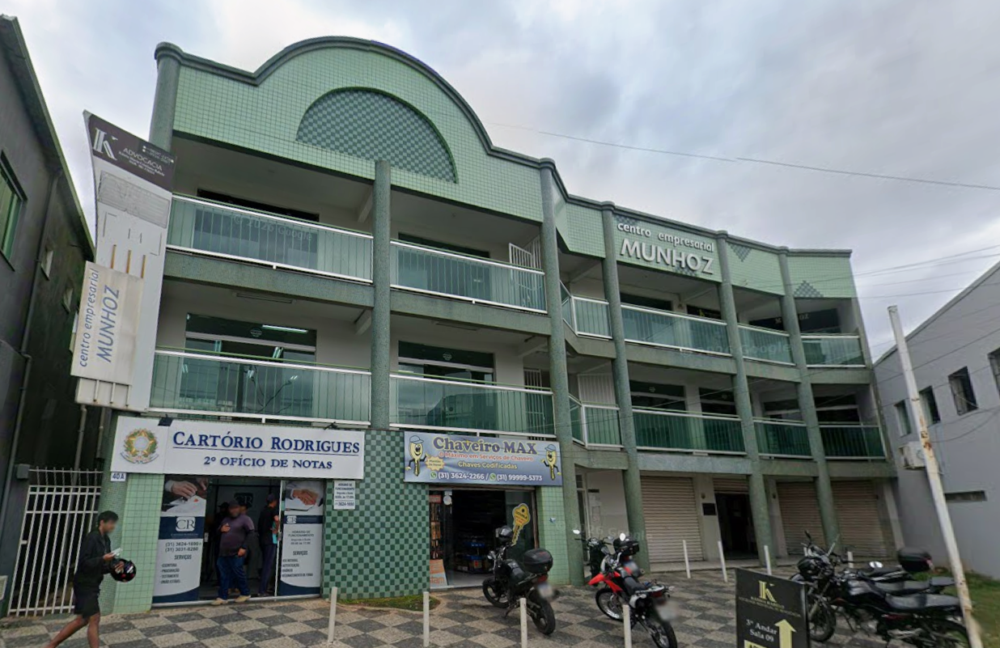

Sou Elisangela Estarlino, psicóloga. Acredito que a terapia é, acima de tudo, um encontro genuíno um lugar seguro para acolher suas dores, entender suas escolhas e caminhar em direção a uma vida mais autêntica.
Sou psicóloga formada com atuação pautada na TCC (Terapia Cognitiva Comportamental), que compreende cada pessoa como única, em constante construção, e capaz de encontrar seus próprios sentidos diante das experiências da vida.
No consultório, meu papel é caminhar ao seu lado sem julgamentos, sem fórmulas prontas, para que você possa se olhar com mais clareza, compreender seus sentimentos e construir escolhas mais alinhadas com quem você é.
Cada processo terapêutico é único. Alguns dos temas que costumam trazer as pessoas ao consultório:
Compreender a origem da ansiedade e desenvolver formas mais leves de lidar com o dia a dia.
Um espaço para se olhar com mais profundidade e entender seus próprios padrões e desejos.
Trabalhar dinâmicas afetivas, familiares e sociais que impactam seu bem-estar.
Acolhimento para processos de luto, perdas e transições significativas na vida.
Questões existenciais, momentos de transição e busca por direção e significado.
Fortalecer a relação consigo mesmo(a) e desenvolver mais equilíbrio emocional.
Você escolhe o formato que for mais confortável — o cuidado e a qualidade da escuta são os mesmos.
Um ambiente pensado para o seu conforto e privacidade, em um encontro cara a cara.
Atendimento com a mesma qualidade e sigilo, direto de onde você estiver.
Você me chama no WhatsApp e conversamos sobre disponibilidade e formato de atendimento.
Um encontro para nos conhecermos e entender o que te trouxe até aqui.
Sessões regulares, no seu tempo, construindo juntos o seu caminho.
Consultório de fácil acesso, pensado para receber você com tranquilidade.

Centro Empresarial Munhoz"Cheguei com diversos problemas os quais tinha vergonha de conversar sobre, porém ela foi super atenciosa e me ajudou a pensar e organizar melhor meus pensamentos, conseguindo chegar a raiz deles. Hoje consigo lidar e compreender melhor minhas emoções, além de melhorar minha auto-estima."
"Cheguei à terapia com muita ansiedade e pensamentos que acabavam me prejudicando no dia a dia. Com a TCC, aprendi a entender melhor esses pensamentos e a lidar com eles de uma forma mais consciente. A terapia tem me ajudado muito a enxergar as situações com mais clareza e leveza."
"Comecei as sessões depois de muito tempo receosa, com medo de como seria. Logo no começo, me senti super segura, ela foi compreensiva e calma ao lidar comigo. Eu cheguei com diversos medos e uma crise de ansiedade enorme, que com o tempo melhorou bastante, e hoje estou sem medos e com a ansiedade super controlada."
Se você sente que é hora de cuidar de si, estou aqui para caminhar com você. Vamos conversar?
Agendar minha consulta